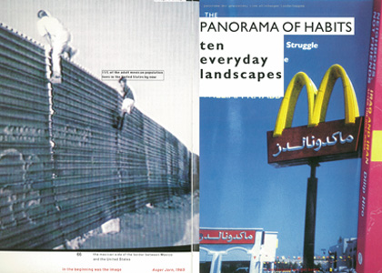

VUILE HANDEN - GRAFISCH ONTWERP EN KRITISCH ENGAGEMENT
VAN TOORN - PATER
KRITIEK - DETOURNEMENT - HIGH EN LOW CULTURE
VOORBEELDEN
SILENT SHOUT EN SHAKING THE HABITUAL
THE SPRAWL - INSTRUMENTALISATIE
VAN TOORNS BILJET - EXCES - SELLOUT
CONCLUSIE
VAN TOORN - PATER
De enige keer dat ik Jan van Toorn in het echt sprak, was in de lobby van het hotel waar ik met mijn schoolklas verbleef in Venetië. We waren daar voor de beeldende kunstbiënnale, in 2015. Van Toorn, mijn lerares Els Kuijpers, twee medestudenten en ik hadden een gesprek over de exposities. Wat me met name is bijgebleven is dat Van Toorn behoorlijk kritisch was over het meeste wat hij gezien had, maar die kritiek steeds afsloot met ‘je moet je handen vuil maken’.
Die houding zie ik terug in zijn boek Design’s Delight, dat een soort sleutelwerk vormt voor Van Toorn’s ontwerpaanpak. Op de eerste pagina’s zet hij op vrij beknopte manier zijn ideeën over zijn vak uiteen, maar veruit het grootste deel van het boek bestaat uit montages van tekst en beeld, die als het ware een poging zijn de problematiek die hij uiteenzet, een antwoord te bieden. De theorie wordt onmiddellijk geïnstrumentaliseerd. Van Toorn zegt over zichzelf in de tekst: ‘(ik ben) voor alles een maker - imenad van de praktijk die probeert het hoe van het maken onder de knie te krijgen.’
Een belangrijk verschil, volgens mij, tussen Van Toorn en andere ontwerpers met een maatschappijkritische inslag, zoals collectief Foundland of Ruben Pater, is dat Van Toorn nooit een onderwerp uit het nieuws pakt om een project over te maken.
Ruben Pater’s Drone Survival Guide^1 neemt een onderwerp dat op dit moment speciaal relevant is — het gebruik van gewapende drones door het Amerikaanse leger in het Midden-Oosten — en maakt een zelf geïnitieerd project over dat onderwerp, waarin hij probeert de toeschouwer aan te zetten tot kritische vragen. In dit geval: wie heeft er behoefte aan een gids over hoe je een droneaanval kunt overleven? De impliciete boodschap is uiteraard dat veel onschuldige mensen het gevaar lopen door een droneaanval om het leven te komen — iets wat wordt bevestigd door statistieken wordt bevestigd^2.
Toen ik de Drone Survival Guide voor het eerst zag, vond ik het feit dat die aanklacht impliciet werd gelaten, het sterkste aan het hele werk. In de beschrijving van het project op Pater’s website daarentegen ontkent de ontwerper de aanklacht helemaal, en depolitiseert hij zelfs zijn hele project:
“The Drone Survival Guide is not useful for survival, for anti-drone warfare, nor is it an act of propaganda. It is made with the sole purpose of sharing information about a phenomenon that is quickly changing warfare, and which many do not yet fully comprehend. The Drone Survival Guide is a citizen initiative, self-funded and made with public information, to balance the information provided by actors with a political or commercial agenda.”
Pater lijkt het idee van propaganda hier af te keuren. Hij pleit voor ontwerpers als kritische, zelfstandige verstrekkers van feitelijke, objectieve informatie. Hij leent het ideaal van de journalist, iemand die wars is van ideologie en recht op de feiten afgaat, en plakt dat op het ontwerpvak. Hij geeft dat bovendien toe als hij over zichzelf schrijft: “I use tools of visual communication to create new relations between journalism and design.”
Het verschil met Van Toorn zou in dit opzicht niet groter kunnen zijn. Hij ziet ontwerp juist als het manipuleren van informatie in een dialectische context: het ontwerp is argumenterend.
In 1972 heeft Van Toorn een publiek gesprek met ontwerper Wim Crouwel in museum Fodor. Dat gesprek gaat met name over de kwestie van objectiviteit in ontwerp — Crouwel stelt zich op als tegenstander van Van Toorn door naar zijn zeggen een ‘ruisvrije’ communicatie na te streven, een manier van ontwerpen waarin de ontwerper als het ware uit de zij gaat van boodschap en ontvanger. Crouwel en Pater staan niet precies aan dezelfde kant, maar beide ontwerpers ontkennen in hun schrijven het subjectieve karakter van het ontwerpvak dat Van Toorn beschrijft. In Van Toorn’s ogen is het niet mogelijk informatie in pure, ongemanipuleerde vorm over te brengen, en is het dus ook niet zinvol om daar naar te streven. Beter zou het zijn om de manipulaties van de ontwerper luid en duidelijk aan te geven, zodat de toeschouwer zich ervan bewust kan worden en zich een houding kan geven tegenover wat hem getoond wordt.
Dat betekent niet dat Van Toorn’s ontwerpen per se eenduidig zijn, of propagandistisch in de totalitaire zin waarin dat woord meestal wordt opgevat. In Design’s Delight zet hij beeld en tekst weliswaar met een duidelijk activerende boodschap tegenover elkaar, maar niet op zo’n manier dat er maar één conclusie aan verbonden kan worden.
Els Kuijpers, een goede vriend van Van Toorn en als redacteur verbonden aan Design’s Delight (en dus de lerares die ons meenam naar Venetië) beschrijft in de catalogus Strategies in Communication Design - staging and rhetorics in the work of Jan van Toorn dat ambigue aspect van zijn werk. Zij relateert dat aan Umberto Eco’s idee van het ‘open werk’:
“…het werk dat als een field of possibilities zo is gestructureerd dat het een dynamisch proces van betekening ontwikkelt waarin betekenis nooit gefixeerd raakt. Dat wil niet zeggen dat betekenis onmogelijk is in de eindeloze semiosis van rusteloze betekenaars die nergens een betekende zouden vinden. Integendeel. het veld is juist in staat iedere keer nieuwe maar provisorische betekenissen voort te brengen.”
Hoewel ik eerder beschreef dat Pater de boodschap van zijn werk impliciet laat, zie ik dat idee van ‘open werk’ niet terug in de Drone Survival Guide. Hij geeft een aantal (selectieve) feiten en laat, om de schijn van objectiviteit te behouden, (een aanzet tot) duiding achterwege. De manipulatie van de ontwerper blijft verborgen. Het werk kan misschien aanleiding zijn voor een discussie, maar het is niet dialectisch van aard.
Een ander groot verschil tussen een ontwerper als Van Toorn en hedendaagse ‘geëngageerde’ ontwerpers is dat het werk van de laatste zich vaak in een eigen geïnitieerde of anders autonome (bijvoorbeeld in opdracht van een kunstinstelling) context voltrekt. De ‘ontwerper als journalist’ is niet in staat werk in opdracht uit te voeren zoals een ‘normale’ ontwerper. Ik vermoed dat het argument voor die positie te maken heeft met het idee dat onafhankelijkheid een noodzaak is voor een kritische houding, maar in mijn ogen laat het oeuvre van Van Toorn, dat voor het merendeel uit werk in opdracht bestaat, dat die kritische autonomie ook in opgedragen werk kan bestaan. Dat is geen onbevochten positie, en de ontwerper zal zich niet van alle hypocrisie kunnen kwijten.
Maar werk dat ontwerpers in opdracht doen, is meestal het werk dat opgaat in het weefsel van media dat ons dagelijks omringt, terwijl het zelfgeïnitieerde werk door een select aantal in een galerie of museum wordt aanschouwd. Juist het feit dat grafisch ontwerp zo alledaags is, dat alle media die we binnenkrijgen grafisch ontworpen is, geeft het vak een unieke positie. Door niet in opdracht te werken zetten ontwerpers zichzelf buitenspel (ze zijn bang om hun handen vuil te maken!). Pater schrijft in zijn websitebiografie over “lessen(ing) the negative impact that design has on the world and turn(ing) it into something positive.” Volgens mij kun je dat niet effectief nastreven als je niet zelf deelneemt aan het vormgeven van de wereld.
KRITIEK - DETOURNEMENT - HIGH EN LOW CULTURE
De vraag die wérkelijk ten grondslag ligt aan deze scriptie, is: Hoe kun je kritisch zijn als ontwerper?
In haar tekst From Criticism to Critique to Criticality beschrijft theoretica Irit Rogoff het ‘vervagen van de grenzen’ tussen maken en theorie, tussen kunstenaar en intellectueel. Ooit was kritiek (criticism) volgens haar het toepassen van waarden en oordelen was vanuit humanistisch perspectief dat amper onderkend werd. Tegenwoordig is kritiek (als critique en criticality), als gevolg van jaren van poststructuralisme, gericht op het analyseren van zijn eigen fundament (‘a theorist is one who has been undone by theory’). Omdat dat fundament niet langer vast is, zorgt voortschrijdend inzicht ervoor dat een theoreticus het nooit bij het juiste eind kan hebben: ‘one is after all always at fault’, verwoordt Rogoff het. Wat zij ‘criticaliteit’ noemt is een houding van kritiek die als gevolg daarvan opgekomen is:
’criticality’(…) is taking shape through an emphasis on the present, of living out a situation, of understanding culture as a series of effects rather than of causes, of the possibilities of actualising some of its potential rather than revealing its faults…
Ik lees dat als een verschuiving van theorie als medium van retoriek naar handeling.
Een ‘praktisch intellectueel’, zoals Van Toorn de graficus (en de documentairemaker, fotograaf, kunstenaar etc.) karakteriseert[^1], wordt al getypeerd door het feit dat hij handelt. Dat is wat hem onderscheidt van theoretici, publicisten, filosofen, kortom de ‘gangbare’ intellectuelen. Het ligt dan voor de hand dat zijn kritische bijdrage moet liggen in die handeling (en dus niet in retoriek die daar los van staat).
Mijn leraar typografie Matthias Kreuzer, van ontwerpstudio Our Polite Society, zegt tijdens een discussie in de les over engagement in grafisch ontwerp, dat een groot deel van het discours over ontwerp plaats heeft in het werk, en dat het daarom belangrijk is voor ontwerpers om te bewegen (to make a move), om nieuwe dingen te proberen, in het werk zelf.
Eigenlijk is dat een bondige samenvatting van het soort attitude dat ik probeer te beschrijven. Het komt neer op een onderscheid tussen zeggen en doen. De kritiek moet voort komen uit het werk zelf, en niet uit het onderwerp van het werk.
Het idee van ‘altijd fout zitten’ dat Rogoff beschrijft, is iets wat voor praktisch intellectuelen ook opgaat. Niet alleen om de reden die zij beschrijft, dat een opvatting of aanpak altijd ouderwets raakt, maar ook om een andere: omdat ontwerp een opdrachtgebonden vak is, ontkomt de ontwerper nooit aan het web van macht en belangen dat in de media overal aanwezig is. Hierin verschilt een een ontwerper van een kunstenaar: waar een kunstwerk tot op zekere hoogte an sich te beoordelen is, en een kunstenaar, ook al heeft hij een mecenas, een autonome rol voor zijn werk kan claimen, kan een ontwerp nooit los gezien worden van het medialandschap waar het deel van uitmaakt.
Franse schrijver Guy Debord beschrijft in zijn boek Le societé du spectacle (‘de spektakelmaatschappij’) de moderne maatschappij als een waar echte, geleefde ervaring meer en meer wordt vervangen door representaties, die hij ‘spektakel’ noemt.
Grafisch ontwerp is tegelijkertijd met het modernisme ontstaan en de eerste ontwerpers, aan het begin van de twintigste eeuw, maakten vaak werk vanuit de modernistische utopische visie. Maar gaandeweg de twintigste eeuw, met de opkomst van massamedia en het verschuiven van ontwerp van de avant-garde naar de mainstream, is ontwerp die politieke dimensie enigszins kwijtgeraakt en is het ontwerplandschap samen gaan vallen met het medialandschap, en onderdeel gaan uitmaken van het spektakel. Ontwerpers van nu zijn altijd schuldig: de ‘spektakelmaatschappij’ die Guy Debord beschrijft, is immers bijna geheel door ontwerpers vormgegeven.
Guy Debord en de Situationistische beweging waar hij deel van uitmaakte zagen détournement als aangewezen ondermijnende strategie tegen de spektakelmaatschappij. Het idee van détournement is om het concept van appropriatie en het verdraaien van culturele boodschappen dat gebruikt werkt door de avantgarde (de Dadaïstische readymade, bijvoorbeeld) toe te passen in een popculturele context. De boodschappen in reclame en massamedia waar mensen dagelijks mee in contact komen worden ‘omgedraaid’ en krijgen een activerende werking.
Debord en Gil Wolman schrijven in hun User’s Guide to Détournement:
’all known means of expression are going to converge in a general movement of propaganda that must encompass all the perpetually interacting aspects of social reality.’
Muziekjournalist Paul Oldfield schrijft in 1985 een tekst over subversie in popmuziek, en wat er op dat punt nog van over is. Volgens Oldfield was subversie, ondermijning, in de Situationistische zin in de jaren ’60 voor veel mensen een valide strategie van verzet tegen de ‘spektakelmaatschappij’. Later pas werd duidelijk dat spektakel juist goed gedijt bij verstoring en chaos, sterker nog, dat het dat nodig heeft (‘the incoherence of the spectacle is articulated as the spectacle of incoherence’). Het spektakel coöpteert de weerstand die ertegen geboden wordt. Daarom is de ondermijnende kracht die eerder aan popmuziek werd toegeschreven, niet meer van toepassing[^2].
Wat Oldfield niet doet in zijn tekst, en wat volgens mij wel belangrijk is, is een onderscheid maken tussen twee soorten van subversie: één, waar het doel is om mensen te wijzen op het spektakel dat zich voor hun ogen afspeelt (de kritische strategie van deconstructie valt hieronder, en ook de meeste vormen van Situationistisch détournement) en een, waar geprobeerd wordt om los te komen van de huidige situatie, of die te destabiliseren, door iets radicaal anders voor te stellen.
Voor de eerste vorm van subversie wijst Oldfield naar een jaren ’80-act die in zijn ogen als enige muziekgroep deconstructie als strategie hanteert, namelijk Scritti Politti (hun sleutelwerk Cupid & Psyche ’85 stamt uit hetzelfde jaar als Oldfield’s tekst). De muziek van Scritti is honderd procent pop, maar op zo’n manier dat alle aandacht ligt op de structuur en de materialiteit ervan. De tekst van een nummer als Perfect Way is in zichzelf een soort rare verzameling van popclichés die functioneel is voor een popnummer, maar ook bizar. Oldfield beschrijft het met het woord depthlessness (diepteloosheid), dat hij leent uit Fredric Jameson’s essay Postmodernism, Or the Cultural Logic of Late Capitalism. Scritti hanteert een ‘strategie van de totale oppervlakte’ om tot een pop-deconstructie te komen[^3].
Is zoiets denkbaar in ontwerp? De websites van de negende Berlin Biennale^4 door collectief DIS bijvoorbeeld bedient zich van de look van commerciële websites.
Maar het probleem is dat grafisch ontwerp opdrachtgebonden is en het gebruik van vocabulaires uit reclame en media in de context van een opdracht uit een ander veld daarom altijd uitdraait op toe-eigening. Scritti approprieert de sound van popmuziek niet, ze zijn zelf een popgroep.
Een beter voorbeeld is wellicht het werk van Amsterdamse ontwerpstudio Experimental Jetset. In een interview op hun website hebben zij het bijvoorbeeld over het refereren naar de materialiteit van een poster door middel van vouwen, overprinten en perforeren.^5 Bovendien zou je hun veelvuldige gebruik van Helvetica en ontwerpmethodes uit de laat-modernistische ‘Internationale Stijl’, en de manier waarop de studio omgaat met tekst, uit kunnen leggen als deconstructivistische strategieën. Tegelijkertijd zou je ook bij Jetset de vraag kunnen stellen of hun gebruik van een stijl die al sinds het eind van de jaren ’70 terziele is, een geval is van deconstructie of toe-eigening.
(in deze poster bijvoorbeeld voor De Theatercompagnie wordt gebruik gemaakt van (een clichébeeld van) modernistische typografie, typografie die bovendien verstoord wordt door een fotografisch beeld, en een citaat uit het Shakespearestuk zo husselt dat er wartaal overblijft).
Wat betreft de tweede vorm van subversie, het bieden van iets anders, ziet Oldfield maar een mogelijkheid: een terugtrekkende beweging.
“All that’s possible today is the renunciation of agency, varieties of refusal to recreate power, to be yourself: simply disappearance from or discrediting of the places where power and resistance keep propagating each other.”
Voor ontwerpers lijkt mij dat geen acceptabel alternatief.[^6] De ‘plaatsen waar macht en weerstand elkaar overeind houden’ zullen altijd ontworpen worden. Ontwerp als discipline kan zich (opnieuw, vanwege de opdrachtgebonden natuur ervan) nooit afkeren van die plekken. Wat blijft er dan over?
In de rest van deze scriptie wil ik kijken naar engagement in andere ‘low culture’-media om engagement in ontwerp beter te begrijpen, met de focus op dat tweede idee van subversie: het creëeren van een alternatief. Wat voor ‘beweging’ wordt er gemaakt in popmuziek, in film, in genreliteratuur, die leerzaam kan zijn voor ontwerpers?
Amerikaans ontwerper Harsh Patel gebruikt deze grafiek als hulpmiddel om over werk te praten. Grofweg zou je kunnen zeggen dat de polariteit van ‘high culture’ en ‘low culture’ gelijk op gaat met de horizontale as. Klassieke muziek en jazz, moderne kunst en literatuur kunnen in deze matrix allemaal aan de rechterkant geplaatst worden. Deze kunstvormen neigen bovendien naar een alsmaar toenemende mate van abstractie.
Als het over low culture gaat, over popmuziek, bioscoopfilms, reclame, genreliteratuur, pornografie etcetera, moet er gekeken worden naar de linkerhelft van de matrix. Dit zijn vormen van communicatie waar we in ons dagelijks leven altijd en direct mee geconfronteerd worden. Ook grafisch ontwerp, zelfs ontwerp voor een tentoonstelling of boek, zit aan de linkerkant.
Patel’s matrix maakt bovendien een onderscheid tussen gemeenschappelijk en persoonlijk. In mijn ogen is wat concreet en gemeenschappelijk is, inherent politiek. Wat concreet en persoonlijk is, noemen we emotioneel.
kritiek en grafisch ontwerp
Wat zien we? Wat betreft kleurstelling is het biljet duidelijk een opvolger van de oude 25 Gulden, die de kop van Jan Pieterszoon Sweelinck droeg: dezelfde tinten roze en paars keren terug. Wát er afgebeeld is daarentegen verschilt enorm. Op de voorkant van het biljet is een illustratie te zien van een handdruk, en een kleinere van een wereldbol met een lijn door de noordpool.

De achterkant is voorzien van een collage van verschillende illustraties: een flatgebouw, een energiecentrale, een zendmast, een helikopterdek dat bij een offshoreplatform lijkt te horen, dorsmachines in een maaiveld, een blauwdruk van een satelliet en een globe met een lijn door de zuidpool.
Het biljet is geen directe kritiek op de consumptiemaatschappij of op het kapitalisme, maar het toont wél iets wat in de context van een bankbiljet meestal verborgen blijft. De voorkant refereert direct naar de functie van geld: een hulpmiddel voor transacties. De achterkant focust op de productie van waarde: het exploiteren van natuurlijke gronstoffen (het boorplatform), het verdienen aan de transacties zelf (het flatgebouw zou goed gelezen kunnen worden als kantoor van een bank), het verdienen aan landbouw (de combines) en aan communicatie (de satelliet). Het oude biljet, met Sweelinck erop refereert slechts aan een vaag idee van ‘Hollandse glorie’: de functie van geld die Van Toorn expliciet maakt, blijft verborgen.
Er zijn drie redenen waarom Van Toorn’s statement effectief is:[^2]
Één: Het biljet wekt een kritische houding op bij de toeschouwer, maar vertelt hem niet wat hij moet vinden. Er zit een hoop ruimte in wat er gecommuniceerd wordt. Van Toorn ontwijkt wat ontwerper Manuel Bürger in zijn essay *Slippery Design*[^3] omschrijft als ‘het discours van de monotone waarheid’.[^4]
VOORBEELDEN
Op 30 oktober 2014 zingt Perfume Genius zijn nummer ‘Queen’ bij David Letterman^7. Het is een bijzonder optreden. Mike Hadreas is zichtbaar nerveus, gehuld in een spierwit double-breasted kostuum met daaronder een SM-harnas. Zijn lippen zijn rood gestift en zijn haar ligt glanzend opzij. Tegelijkertijd is hij woest: de boosheid in de tekst van het nummer wordt gekanaliseerd in zijn grimas en zijn stramme bewegingen. Wanneer het nummer afgelopen is en David Letterman, de presentator, hem een hand komt geven, kan het contrast tussen beide mannen bijna niet groter zijn. Het inspireert muziekjournalist Sacha Geffen tot een korte ode:
“You can stand next to David Letterman as he ekes out a few wooden syllables, not sure what to think. You can shake his hand and step back and look out at the cameras, look at the people who are watching you from far, far away, because this never was for him.”^8
Hadreas’ muziek en performance zijn nooit luid en duidelijk pro-LHBT. De nummers zijn intiem op het oncomfortabele af en duiken diep in zijn persoonlijke leven. Het feit dat hij gay is speelt daarin een belangrijke rol, maar Hadreas schrijft nooit óver zijn homoseksualiteit. In een interview met muziekwebsite 3voor12 wordt hij gevraagd in welke mate hij een ‘politieke’ zanger is. Hadreas antwoordt:
“Daarom kies ik ook voor deze vorm. Ik kan ook een manifest schrijven, maar dat kan toch weer makkelijk aan de kant gelegd worden. Net als een heel politiek album, dat zullen sommigen op voorhand al niet luisteren. Maar uiteindelijk wordt alles politiek. Het is net als met naaldhakken. Ik draag ze echt niet om een statement te maken. Het ziet er gewoon badass uit. Maar het wordt politiek als ik er de deur mee uit ga. Dan zie ik opeens de mensen kijken.”^9
De film No, van regisseur Pablo Larraín, is een gedramatiseerde verfilming van het Chileense referendum van 1988. Het referendum werd onder internationale druk georganiseerd door het militaire bewind van Auguste Pinochet, en draaide om de vraag of de macht in het land in handen van het leger moest blijven. In de film speelt Gael García Bernal een reclameman die door het anti-Pinochetkamp wordt ingehuurd om een tv-spot te maken die mensen aanspoort ‘nee’ te stemmen. Wanneer Bernal’s karakter voor het eerst een vergadering van de nee-mensen bijwoont, is de spot die ze voor ogen hebben een duistere, met beelden van politiegeweld en aandacht voor de verdwijningen die in de 15 jaar onder het militaire regime hebben plaatsgevonden.
Bernal stelt een radicaal ander soort reclame voor: een die tot in het absurde opgewekt en kleurrijk is en zich alleen focust op de voorspoedige toekomst die de Chileense burgers te wachten staat als ze ‘nee’ stemmen. De slogan is ‘La Alegría ya viene’ — ‘de vreugde komt eraan’. Het nee-kamp wint de verkiezingen en Chili transformeert zonder geweld van een militaire dictatuur naar een parlementaire democratie.
De film verbindt de tv-reclame en de verkiezingsoverwinning direct met elkaar, iets wat buiten fictie lastiger te doen is. Feit blijft dat de spot — in de film en in het echt — volledig gedepolitiseerd is. De misdaden van het regime, of, wat dat betreft, de ethische overwegingen voor democratie, blijven altijd buiten beeld.
In 2007 verschijnt Tropa de Elite, van Braziliaanse regisseur José Padilha. De film is een rauwe combinatie van actiefilm en politiedrama die zich afspeelt in Rio de Janeiro. Hoofdpersoon is Beto Nascimento, kapitein bij BOPE, een speciale politie-eenheid die wordt ingezet om drugscriminaliteit in de sloppenwijken te bevechten. De film laat de eenheid zien als extreem gewelddadig. Hun zwarte uniformen en schedelembleem zijn fascistoïde en de methoden die worden toegepast (vuurgevechten in woonwijken, marteling, etc.) zijn voor veel personages in de film onacceptabel. Toch werd Padilha na afloop beschuldigd van het maken van een propagandafilm voor de eenheid (die echt bestaat), omdat hij het geweld in de film niet expliciet afkeurt.
Vervolg Tropa de Elite II uit 2011 lijkt een soort antwoord op die aantijgingen. De eerste film bevat een behoorlijk element van maatschappijkritiek met betrekking tot hoe drugscriminelen zichzelf handhaven en hoe het drugsgebruik van de middenklasse leidt tot ellende voor de lagere klassen in de sloppenwijken. In het vervolg trekt Padilha zijn doel een enorm stuk breder en probeert hij te laten zien hoe drugscriminaliteit slechts een fractie is van een groter systeem van corruptie dat doorloopt van de favela’s tot de landelijke regering, waar het botte geweld van BOPE niets aan kan doen (sterker nog, de eenheid wordt in deel twee voornamelijk neergezet als wapen van de corrupte politie). Het resultaat is een film die zowel een harde actiefilm als een maatschappijkritische aanklacht is. Dat is schijnbare een vreemde combinatie, maar de twee elementen zitten elkaar nooit in de weg.
De Zweedse synthpopgroep The Knife bestaat inmiddels niet meer. Hun discografie bevat vier studioalbums. Ik wil het verschil bespreken tussen de laatste twee, Silent Shout uit 2006 en Shaking the Habitual uit 2013.
Toen de band Silent Shout opnam, was dat nadat hun nummer Heartbeats een megahit was geworden en ze in 2003 een Grammy voor beste popgroep wonnen. In mijn ogen is het hun eerste serieuze studioalbum. Op de twee voorgangers, The Knife en Deep Cuts, klinkt wat The Knife doet op een vreemde manier onaf, alsof de nummers op een laptop in elkaar zijn gezet als demo voor iets groters. Het werk op Silent Shout is dat grotere. De band klinkt nog steeds poppy, maar niet langer op een vrijblijvende manier. Vanaf de eerste seconden van de plaat wordt de toon gezet door synthesizers en elektronische drums die niet alleen ijzig zijn, maar ook ongemeen fysiek. Tegelijkertijd staan daar ineens betere songstructuren en teksten tegenover. Bovendien is Silent Shout de eerste Knife-plaat die functioneert als een volwaardig album in plaats van een losse verzameling songs, met een tekstuele en instrumentale esthetiek die de nummers bij elkaar houdt.
De band presteert het om én pop, én meer dan pop te zijn. Eerste single We Share Our Mother’s Health danst in hetzelfde ritme als een vroegere Knife-tracks als You Make Me Like Charity, maar is honderd keer feller en catchier. Dat de tekst die frontvrouw Karin Dreijer Andersson zingt, gaat over kolonisatie en uitbuiting van de aarde, treft je pas in latere instantie, tegen de tijd dat je al mee zingt.
The Knife was een linkse, geëngageerde band en op Silent Shout is dat engagement nooit ver weg. Maar het gaat, cruciaal, nooit ten koste van de muziek. De hooks van Neverland, Like A Pen en One Hit bereiken de luisteraar eerder dan hun thematiek. Vaak gaan ze over seks (porno, prostitutie) en de positie van vrouwen en mannen in de samenleving. Het sterke aan de teksten is dat ze weliswaar over grote maatschappelijke onderwerpen gaan, maar nooit plat activistisch zijn. From Off to On, een van de beste nummers op de plaat, gaat (deels) over de verdovende werking van televisie, een tamelijk platgeslagen thema. Maar in de betrekkelijk compacte tekst trekt de band dat thema zo veel groter — onbestemd en mogelijk ingepraat verlangen, ontevredenheid met je eigen lichaam, de moedeloosheid van laat thuiskomen en geen energie meer overhebben voor iets anders dan tv. De zang wordt ondersteund door ingetogen synthesizers die van het geheel een vreemd soort in het niets zwevende torchsong maken. Het nummer is niet alleen kritisch, maar ook persoonlijk en emotioneel. Hetzelfde geldt voor afsluiter Still Light, dat op een vergelijkbaar persoonlijke manier zelfmoord bespreekt.
One Hit is het meest boze nummer op de plaat, maar Karin Dreijer Andersson zet in de lyrics haar eigen kwaadheid af tegen een andere stem — die van haarzelf als man, digitaal verlaagd en vervormd. De uithalen naar seksistische kunst, ouderwetse definities van mannelijkheid en huiselijk geweld krijgen op die manier een gelaagdheid en cynische humor mee die een woedende Dreijer Andersson in de rol van haarzelf nooit zou kunnen bereiken. Bovendien is het performatieve spel met de hoogte van haar stem, dat op meer stukken van de plaat te horen is, in zichzelf een soort poging om al te stramme afbakeningen van man- of vrouwzijn te ontduiken. Die vocale androgynie is in zichzelf een sterker statement dan wat er ook gezongen wordt, omdat ze direct hoorbaar is.
De laatste plaat die de band opnam, Shaking the Habitual, is een heel ander soort werk. Wat betreft de sound van de band, definieert The Knife zeven jaar na Silent Shout iets totaal anders. De hele plaat schuurt, kraakt en zoemt. De high fidelity studiosound van het vorige album is nergens te vinden en een groot deel van het materiaal is opgenomen met zelfgebouwde instrumenten. Ook is Shaking the Habitual erg lang: meer dan anderhalf uur, verdeeld over drie LP’s. Eerste single Full of Fire duurt bijna tien minuten.
Full of Fire is qua sound en thematiek meteen het sleutelnummer van de plaat. Het wordt voortgestuwd door een keihard overstuurde elektronische beat die expres nét te langzaam en te lomp is om op te kunnen dansen. Gaandeweg worden steeds meer bizarre, zenuwachtige geluiden geïntroduceerd, sommige duidelijk synthetisch, andere lastig thuis te brengen. De pophooks van de vorige platen zijn nergens te bekennen. Dezelfde feministische thematiek is wel terug, maar klinkt bozer en platter. De boodschap staat ineens zo centraal dat er weinig meer naast overblijft.
In interviews zegt de band geïnspireerd te zijn door politieke progressieve rock en folk uit de jaren ’70, en Shaking the Habitual heeft eigenlijk precies zo’n inslag: expres moeilijk om naar te luisteren (nummers als Fracking Fluid Injection bestaan uit losse, atonale geluiden die elkaar langzaam opvolgen; in het twintig minuten durende Old Dreams Waiting To Be Realized gebeurt zo weinig dat het haast onmogelijk is het hele nummer aandachtig te luisteren), agressief intellectueel (de titel van de plaat haalt filosoof Michel Foucault aan) en altijd in dienst van de boodschap.
In de songs waar de bizarre instrumentatie hand in hand gaat met het laatste beetje pop dat de band op durft te brengen, is Shaking the Habitual fantastisch. A Tooth For An Eye en Raging Lung hebben beide het typische golvende Knife-ritme en de steeldrums die op vorige platen ook te horen waren, maar zijn tegelijkertijd vreemder en grootser. Maar in de eerste zangregels van opener A Tooth For An Eye is de antikapitalistische inslag meteen luid en duidelijk (‘Under the sun / Look what we have got /And those who haven’t /Bad luck). De gelaagdheid en de emotionele lading die hun muziek eerder had wordt expres achterwege gelaten.
Afsluiter Ready To Lose is qua boodschap het duidelijkst: de band verklaart bereid te zijn het privilege dat ze als inwoners van de westerse wereld hebben, af te werpen om een eind te maken aan ongelijkheid. Dat is misschien dapper om te zingen, maar het probleem is dat het artistiek veel minder interessant is dan hun vroegere werk. Intellectueel gezien is Shaking the Habitual een geweldig album: de muziek is gewaagd en experimenteel, en de teksten gaan over belangrijke onderwerpen. Tegelijk zijn de teksten extreem plat en de muziek vaak expres onluisterbaar. Het hele project heeft iets van de pathetische grandeur van de grootste aller seventies-politieke albums: Pink Floyds The Wall uit 1979. Er is weinig om over na te denken, en veel om het mee eens te kunnen (moeten) zijn.
Voor mij symboliseren de laatste twee Knife-albums de twee verschillende soorten engagement die ik wil onderscheiden. het engagement van Shaking the Habitual is duidelijker, maar het is ook oninteressanter. De militante teksten staan bovendien verder af van de persoonlijke ervaring van de zangeres én van de luisteraar. Het soort waarheid dat steekt, is altijd het soort dat we in ons dagelijks leven herkennen. Die soort waarheid ontbreekt op Shaking The Habitual en is overal te vinden op Silent Shout.
THE SPRAWL - INSTRUMENTALISATIE
The Sprawl is een autonoom project van Amsterdamse ontwerpers Metahaven dat tegelijkertijd bestaat als lange documentaire, video-installatie en website. Het feit dat het project in die drie vormen is uitgebracht is direct terug te zien: het werk combineert elementen van conventionele documentaires, meer abstracte videokunst en interface-elementen die verwijzen naar YouTube, of het internet in het algemeen. Voor deze bespreking wil ik de internetversie[^10] aanhouden omdat dat de enige versie is die ik uitgebreid heb gezien, en omdat die het breedst toegankelijk is.
De website is in essentie een simpele lijst van video’s die volgens Metahaven fragmenten (shards, ‘scherven’, in hun bewoording) zijn uit de lange documentaire. De thema’s van die video’s lopen uiteen, maar ze houden allemaal verband met het onderwerp van het project: propagandatechnieken in de huidige tijd. Meerdere video’s focussen op Rusland, in verband met de crash van vlucht MH17 en de oorlog op de Krim en in de Donbass (die focus heeft sinds de verkiezing van president Trump, na het verschijnen van het project, een heel andere lading gekregen). De volgorde van de video’s op de pagina is elke keer als de pagina geladen wordt anders (kortom: de volgorde is niet belangrijk).
In een aantal video’s zijn mensen aan het woord, als in een meer gangbare documentairefilm: Benjamin Bratton, Maryam Monalisa Gharavi en Peter Pomerantsev komen in beeld tegen een donkere achtergrond en bespreken uiteenlopende onderwerpen: ‘The Stack’, een concept van Bratton om globale infrastructuur te kunnen uitleggen[^11], propaganda tijdens de protesten in Bahrein en in de context van het conflict op de Krim komen aanbod. Maar de ‘talking heads’ zijn slechts één onderdeel van de video’s: ze worden afgewisseld met verschillende nieuwsfragmenten, natuurbeelden, verticaal omgedraaide beelden gemaakt vanuit een auto, en meerdere fragmenten van acteurs die naar computerschermen kijken. Bovendien zijn alle beelden van de documentaire voorzien van steeds veranderende overlays: abstracte en typografische vormen, vaak kleurrijk, dringen de (meestal) vrij kleurloze videobeelden binnen.
Volgens mij kan een lezer zich met behulp van bovenstaande alinea geen beeld vormen hoe het project er uitziet, en dat is precies een van de eerste dingen die opvalt aan The Sprawl: visueel en informationeel zijn de video’s zo overdonderend dat ze lastig te beschrijven zijn. De ondertitel van het project is ‘Propaganda About Propaganda’, wat een goede beschrijving is van de meta-beweging die de makers proberen: niet alleen neemt het project propaganda als onderwerp, de film zelf is een (poging tot) instrumentalisatie van waar de film over gaat. The Sprawl is retoriek en actie tegelijkertijd. De kritiek zit in het werk zelf én in het onderwerp.
Van Toorn’s idee van het benadrukken van de manipulaties van de ontwerper, of in zijn woorden, ‘de ervaarbare spanning tussen de gangbare voostelling van de realiteit en de subjectieve ervaring van de bemiddeling’ zie ik terug in die instrumentalisatie. De kunstgrepen van Metahaven zijn niet alleen bedoeld om de boodschap kracht bij te zetten, maar ook om het propaganda-aspect van het project zelf aan te geven.
Neem de omgedraaide dashcam-beelden bijvoorbeeld. Het beeld-vanuit-een-auto komt op zichzelf vaker voor in documentaires, maar zodra het op de kop staat wordt het absurd. Om te beginnen hint het dashcam-beeld in de context van Rusland naar de vele dashcamvideo’s die we vanuit Rusland zien (de komeet die in februari 2013 in Rusland neerstortte was bijvoorbeeld in de media voornamelijk te zien op dashcambeelden). Daarnaast zitten er ook meteen connotaties aan het omdraaien van het beeld: het doet denken aan digitale media als een spiegel voor ons (wat wordt versterkt door de beelden van acteurs die in de schermen kijken) en als een hall of mirrors, een verstoorde weergave van de werkelijkheid. Bovendien is het directe effect van het beeld dat de toeschouwer het gevoel krijgt zich te bewegen door een vreemde nieuwe wereld waarin alles als het ware op zijn kop staat. Zoals met alle effectieve visuele strategieën klinkt het nogal plat zodra je het met woorden uitlegt.
Een vergelijkbaar effect wordt bereikt met de overlays. Omdat ze van zo’n kunstmatige en verstorende aard zijn, verwijzen ze niet alleen naar de manipulatie door interfaces die in de video’s door Bratton wordt beschreven[^12] maar wijzen ze de toeschouwer erop dezelfde manipulatie op hén wordt toegepast. Daarnaast zijn deze overlays het element waar de praktijk van Metahaven als grafisch ontwerpers (The Sprawl is het eerste documentaireproject dat de studio doet) naar boven komt. De typografie die in de overlays te zien is, is niet direct te linken met het onderwerp van de documentaire, maar des te meer met het voorgaande werk van de studio, als een soort handtekening.
Metahavens ingrepen zijn niet zonder (absurde) humor; in de beelden van acteurs die naar schermen staren wordt er bijvoorbeeld veelvuldig gebruik gemaakt van rookmachines als directe hint naar de mystificatie die plaats vindt in de propaganda die besproken wordt. En dan is er nog de muziek, van Berlijnse producer Kuedo: heftig, duister en synthetisch. Onheilspellende muziek is in zichzelf een cliché in documentaires over politiek en technologie, maar wat Kuedo voor The Sprawl maakt is van zo’n intensiteit dat, opnieuw, de manipulatie van de toeschouwer door de muziek extra wordt benadrukt.
Het resultaat is een gefragmenteerde documentaire die op elk moment bedolven is onder vier of vijf interventies tegelijk. Je zou de kanttekening kunnen plaatsen dat het hele project wat te zwaar is qua mediatie en wat te licht wat betreft informatie, maar het werkt wel degelijk. De mogelijkheid om beelden terug en door te kunnen spoelen is ontontbeerlijk, vanwege de hoge dichtheid van dingen op het scherm.
het grootste punt van kritiek dat ik zou willen plaatsen is dat het dialectische aspect enigszins ontbreekt. De mediatie/manipulatie van de makers is duidelijk, maar hun standpunt niet altijd. Als je het werk naast dat van Van Toorn zou leggen (en ik vind Metahavens werk zeer vergelijkbaar met dat van Van Toorn, ook al maakt Van Toorn geen video’s) is het grootste verschil dat Van Toorn keer op keer benadrukt (bijvoorbeeld in Design’s Delight) dat het politieke aspect dat hij probeert uit te lichten persoonlijk is, dat het bestaat in onze dagelijkse leefwereld. Metahavens wereld van propaganda en verwarring is zo science-fiction dat je achterblijft met de vraag hoe je ertoe te verhouden.
VAN TOORNS BILJET - EXCES - SELLOUT
Er is één werk, of, preciezer gezegd, een voorstel voor een werk, van Van Toorn dat voor mij exact de soort kritische houding belichaamt die ik probeer te beschrijven. Begin jaren ’80 werd Van Toorn door de Nederlandsche Bank gevraagd een voorstel te doen voor een nieuw ontwerp voor het 25 Gulden-biljet. Het ingediende voorstel wordt getoond en kort besproken in Els Kuijpers’ boek Ootje Oxenaar, ontwerper + opdrachtgever[^13].
Wat zien we? Wat betreft kleurstelling is het biljet duidelijk een opvolger van de oude 25 Gulden, die de kop van Jan Pieterszoon Sweelinck droeg: dezelfde tinten roze en paars keren terug. Wát er afgebeeld is daarentegen verschilt enorm. Op de voorkant van het biljet is een illustratie te zien van een handdruk, en een kleinere van een wereldbol met een lijn door de noordpool. De achterkant is voorzien van een collage van verschillende illustraties: een flatgebouw, een energiecentrale, een zendmast, een helikopterdek dat bij een offshoreplatform lijkt te horen, dorsmachines in een maaiveld, een blauwdruk van een satelliet en een globe met een lijn door de zuidpool.
Het biljet is geen directe kritiek op de consumptiemaatschappij of op het kapitalisme, maar het toont wél iets wat in de context van een bankbiljet meestal verborgen blijft. De voorkant refereert direct naar de functie van geld: een hulpmiddel voor transacties. De achterkant focust op de productie van waarde: het exploiteren van natuurlijke gronstoffen (het boorplatform), het verdienen aan de transacties zelf (het flatgebouw zou goed gelezen kunnen worden als kantoor van een bank), het verdienen aan landbouw (de combines) en aan communicatie (de satelliet). Het oude biljet, met Sweelinck erop refereert slechts aan een vaag idee van ‘Hollandse glorie’: de functie van geld die Van Toorn expliciet maakt, blijft verborgen.
Er zijn drie redenen waarom Van Toorn’s statement effectief is:[^14]
Één: Het biljet wekt een kritische houding op bij de toeschouwer, maar vertelt hem niet wat hij moet vinden. Er zit een hoop ruimte in wat er gecommuniceerd wordt. Van Toorn ontwijkt wat ontwerper Manuel Bürger in zijn essay Slippery Design^15 omschrijft als ‘het discours van de monotone waarheid’.[^16]
Twee: De Nederlandsche bank is het ultieme establishment. Het feit dat Van Toorn niet bedankt voor de opdracht maar juist de uitdaging aangaat laat zien dat hij de opdrachtgebonden natuur van het vak onderkent (en niet bang is voor vuile handen!). In het biljet worden, net als in eerdere voorbeelden, de vorm en de context van het werk geïnstrumentaliseerd voor de kritiek. Eigenlijk is wat Van Toorn hier doet goed vergelijkbaar met Scritti Politti’s deconstructieve popmuziek (die wel popmuziek blijft! Op dezelfde manier blijft het biljet een bankbiljet, geen ‘zuiver’ kritisch statement). Een deconstructief bankbiljet, zogezegd.
De laatste reden hangt daar nauw mee samen: juist omdat een bankbiljet normaal geen plek is voor dit soort kritiek, is die kritiek een exces. Het probleem dat we eerder bij Oldfield gezien hebben is dat kritiek makkelijk gecoöpteerd kan worden door het spektakel.
Stel dat je naar een expositie gaat, of een filosofisch of literair boek leest. Als je op die plekken wordt geconfronteerd met kritiek, ben je er op voorbereid. Bovendien relativeer je dan altijd wat er wordt gezegd omdat de context van een kunstwerk in ‘high culture’ een soort vrijplaats is. Maar wanneer een kritisch element zich voordoet op een plek waar je het niet verwacht, waar je je niet kunt voorbereiden, is het denk ik lastiger om die kritiek naast je neer te leggen. Er vindt een transgressie plaats: er wordt iets gezegd dat oprechter, diepgaander is dan wat er normaal gezegd wordt.
In die plekken kan kritiek zich tijdelijk verweren tegen die coöptatie. De voorbeelden die ik aangehaald heb zijn stuk voor stuk voorbeelden van die plekken: een popnummer, een actiefilm, een bankbiljet.
In zekere zin vindt die coöptatie plaats juist omdat de kritiek verwacht is: als kritiek een noodzakelijk ingrediënt wordt in de productie van een bepaald ding (bijvoorbeeld een tentoonstelling, of een magazine voor kunstkritiek), gaat het deel uitmaken van de grotere matrix van de productie van waarde, waarin spraak en tegenspraak uiteindelijk hetzelfde doel dienen.
Kritiek als exces vermijdt die valkuil door in zekere zin overbodig te zijn. In het voorbeeld dat ik eerder noemde is Van Toorns activerende ontwerp volledig overbodig voor het functioneren van het bankbiljet. Een kritisch project door een ontwerper in een expositieruimte daarentegen is essentieel voor het functioneren van die expositieruimte. Een kritisch artikel in Artforum is essentieel voor het bestaan van het tijdschrift.
Franse schrijver George Bataille, die van alle denkers waarschinlijk het meest uitgebreid over exces als concept schrijft, definieert in de samenleving het homogene, het essentiële en kwantificeerbare, en het heterogene, dat buiten die orde valt.[^17] De inherente tendens van de homogene samenleving (de productieve, bruikbare samenleving, zoals Bataille die omschrijft) is om alle afwijkende elementen de assimileren en in te zetten voor het bruikbare (gedefinieerd als bruikbaar voor de productie van waarde). Bataille schrijft voor de opkomst van massamedia en dus voor het gebruik van het begrip spektakel, maar de twee ideeën hangen wel samen. Het hetrogene in de samenleving karakteriseert zich door onassimileerbaar te zijn, en zo buiten de gangbare orde van dingen te staan. Het is een transgressief element, een breuk in de façade.
In de film Network uit 1976 krijgt een uitgebluste TV-presentator, gespeeld door Peter Finch, te horen dat zijn show gestopt wordt. Wanneer hij daarop in zijn programma aankondigt binnen een week zelfmoord te plegen, dreigt hij direct ontslagen te worden, maar uiteindelijk mag hij nog één keer terugkomen om in waardigheid afscheid te nemen. Hij gebruikt die kans om af te steken in een tirade tegen zijn leven en de moderne maatschappij. Dan veranderen zijn bazen van mening: in plaats van ontslagen te worden, krijgt hij zijn eigen show om tekeer te gaan tegen alles wat hem kwaad maakt. Zo wordt zijn boosheid, die eerst gezien wordt als heterogeen element (mensen bellen boos naar de zender, klagen over het taalgebruik, mensen binnen de zender eisen zijn ontslag), overgenomen voor financieel gewin en tot homogeen element gemaakt.[^18] Network laat nauwkeurig zien hoe coöptatie in zijn werk gaat.
Dat idee van coöptatie wordt in de context van populaire muziek ook wel (negatief) omschreven als ‘selling out’: de anti-establishment muziekgroep die hun ziel verkoopt aan een groot label en hun sound vervlakt om meer geld te verdienen. Als Oldfield het heeft over het ontvluchten van de ‘plekken waar macht en weerstand elkaar overeind houden’ hoor ik eigenlijk diezelfde kritiek: ‘mainstream’ gaan, op het grote publiek mikken, is je kritische ziel verkopen. Maar of dat ook gebeurt, hangt helemaal af van hoe excessief die kritiek blijft! Grace Jones bijvoorbeeld heeft altijd popmuziek voor een groot publiek gemaakt, maar de kritische lading van die muziek en van haar performance is nooit gecoöpteerd omdat die niet in het middelpunt van haar muziek stond. Daardoor kan ze zelfs nu nog steeds shockeren, terwijl een punkband die in de jaren ’80 een expliciete anti-establishmentboodschap verkondigde en daar hun identiteit aan ontleende, ongeloofwaardig is als ze nu hun geld verdienen door op grote festivals te spelen.
Dat betekent dat er binnen én buiten de mainstream genoeg ruimte is om kritisch te zijn. En het betekent ook dat de plekken buiten kunst[^19], literatuur en kritiek bij uitstek geschikt zijn om dingen te bevragen en mensen aan het denken te zetten.
CONCLUSIE
In de werken die ik heb besproken, komen twee aspecten van hun kritische houding aan de oppervlakte: enerzijds het instrumentaliseren van hun vorm voor kritiek, en anderzijds het overbodige karakter van die kritiek. Die twee aspecten staan in verband met elkaar: in het geval van The Knife en Shaking The Habitual bijvoorbeeld zorgt het feit dat de band hun kritiek niet langer verpakt in popsongs maar die ineens in het midden zet van wat ze doen, ervoor dat het bestaansrecht van de muziek enigszins in gevaar zou komen als die kritiek er niet zou zijn.
Voetnoten
[^1]: linkse theoreticus Régis Debray bespreekt in zijn essay Socialism: A Life Cycle het idee van de ‘intellectueel-werker’. Volgens hem neemt de typograaf een unieke positie in met betrekking tot het ‘intellectualiseren van het proletariaat’ en het ‘proletariseren van de intellectueel’. (pag.6)
[^2]: De film Network uit 1976 laat die coöptatie van kritiek zien in de context van een televisieshow.
[^3]: Je zou wat Scritti Politti in de jaren ’80 deed goed kunnen vergelijken met de hedendaagse acts rondom PC music, zoals SOPHIE. Hun muziek verhoudt zich ongeveer tot de huidige popmuziek zoals Scritti Politti zich verhoudt tot de popmuziek van midden jaren ’80.
[^6]: Overigens voor de meeste popartiesten ook niet. Ver in de marges van de popmuziek houd je weliswaar schone handen, maar het is niet zo dat echte subversie daar mogelijk wordt. Zo bezien is Oldfield’s conclusie tamelijk defaitistisch.
[^10]: te vinden op sprawl.space
[^11]: zie ook : Benjamin Bratton, The Stack, MIT press, Cambridge Massachusetts, 2016.
[^12]: in ‘Interface and Cognitive Fundamentalism’.
[^14]: En wellicht waarom het voorstel nooit is gerealiseerd!
[^16]: Zie ook het eerder besproken idee van Eco van het ‘open werk’.
[^17]: Georges Bataille, The Psychological Structure of Fascism.
[^18]: Aflevering Fifty Million Merits van sciencefictionserie Black Mirror toont grofweg hetzelfde verhaal.
[^19]: Aan de ene kant is autonome kunst bij uitstek een plek voor kritiek omdat ze als discipline overbodig is — aan de andere kant zorgt de structuur van financiële belangen en handel rondom kunst dat die overbodige positie in gevaar komt en dat de kritische houding minder sterk is. Hetzelfde principe van coöptatie vindt plaats.
 (in deze poster bijvoorbeeld voor De Theatercompagnie wordt gebruik gemaakt van (een clichébeeld van) modernistische typografie, typografie die bovendien verstoord wordt door een fotografisch beeld, en een citaat uit het Shakespearestuk zo husselt dat er wartaal overblijft).
(in deze poster bijvoorbeeld voor De Theatercompagnie wordt gebruik gemaakt van (een clichébeeld van) modernistische typografie, typografie die bovendien verstoord wordt door een fotografisch beeld, en een citaat uit het Shakespearestuk zo husselt dat er wartaal overblijft).